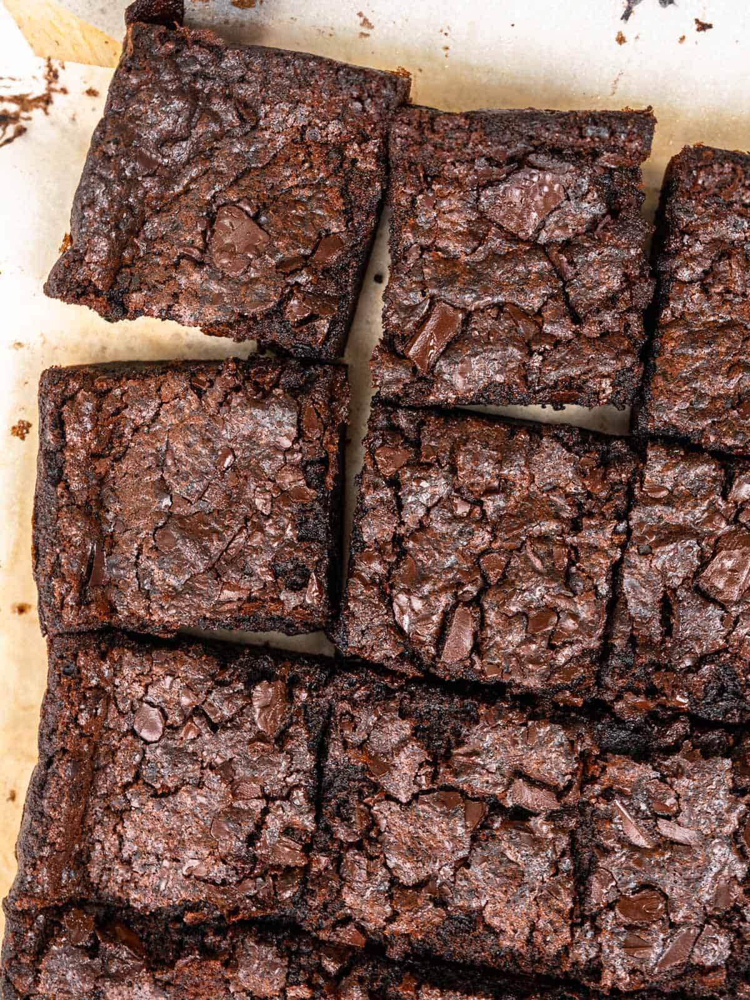

Mochi Brownies

Description
Mochi brownies are a chocolatey and rich dessert, with a
twist on a regular brownie with a soft, yet dense and
chewy inside, and a crispy outside. You can add extra toppings
like chocolate chips, nuts, or powdered sugar dusted on top.
Note: These can last at room temp in a sealed container for 3-4 days,
or cooled completely then frozen for 1-2 months, and
thawed at room temperature before eating.
Ingredients
- 90g (6 tbsp) unsalted butter
- 4g (2 tsp) instant coffee powder
- 130g (1 cup) glutinous rice flour
- 150g (3/4 cup) granulated sugar
- 40g (1/2 cup) cocoa powder
- 7g (1 1/2 tsp) baking powder
- 1/4 tsp salt
- 360ml (1 1/2 cup) whole milk
- 2 large eggs
- 100g dark chocolate (roughly chopped)
- flakey salt (optional)
Steps
- Preheat the oven to 350°F (180°C) and line an 8-inch
baking pan with parchment paper.
- Melt the butter in a small saucepan, around 3 minutes, then
heat for another 3-5 minutes until fragrant and there are
brown specks on the bottom of the pan.
- Remove from heat and add coffee powder to the saucepan. Set
aside to cool for 15 minutes until room temperature.
- In a large mixing bowl, combine the glutinous rice flour,
cocoa powder, sugar, baking powder, and salt. Whisk till
combined.
- Next, add milk, the cooled brown butter and egg. Whisk
till smooth.
- Pour the batter into the prepared pan and scatter on top
the chopped chocolate.
- Bake for 45 minutes, or until a toothpick inserted into
the center comes out slightly gooey.
- Cool the pan on a wire rack completely, then remove the
brownies from the pan, and sprinkle with flakey salt.
Cut into 12 squares and enjoy~